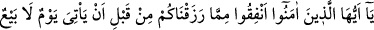
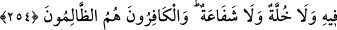

gerekli kılamadığı gibi, dilemesine mânî de olamaz.
Bu âyetten, hayır veya şer, îmân veya küfür her hâdisenin Allah’ın dilemesine bağlı
olduğu açıkça anlaşılmaktadır. Bu ise Mûtezile mezhebinin aleyhinde bir delîldir.
İmam Gazzâli, Allah Teâlâ’nın “en-Nâfi’” ve “ed-Dârr” isimlerinin açıklanmasında
şöyle demektedir: Hayır ve şer, fayda ve zarar, melekler, insanlar ve cemâdât
vâsıtasıyla veya vasıtasız olarak Allah’a nisbet olunur. Sanma ki; zehirin bizzat kendisi
öldürür ve zarar verir, yemek bizzat doyurur ve fayda verir veya melek, insan, şeytan
veya yıldız vesâir mahlûkattan herhangi biri kendi başına hayır veya şerre, fayda ve
zarara muktedir olur. Bilakis bütün bunlar musahhar kılınmış, emre âmâde hâle
getirilmiş sebepler olup bunlardan, râm olunduklarından başkası sudûr etmez.
Câhilin îtikâdına göre bütün bu sebeplerin ezelî kudrete izâfesi, kalemin kâtibe olan
nisbeti gibidir. Nitekim hükümdar bir iyilik yapmak veya bir cezâ vermek istese bunu,
kaleme değil, kalemin emrine verildiği kimseye yapar. Diğer vâsıtalar ve sebepler de
bunun gibidir. Yukarıda “câhil inancına göre” diye kayıt koyduk. Çünkü câhil, kalemi
kâtibin emrine verilmiş bir şey olarak görür. Arif ise, kalemin Allah tarafından kâtibin
emrine verildiğini ve onun elinde bulunduğunu bilir. Dolayısıyla kalemin emrine
verildiği zâtın Allah olduğunu anlar. Çünkü kâtibi yaratan, ona güç kuvvet veren ve
parmaklarını oynatıp kalemi hareket ettirmesini sağlayan Allah olunca, o takdîrde
insanın eli ve kalemiyle yazanın Allah olduğu anlaşılır. Cüz’î irâdeye sâhip insanlar
hakkında durum böyle olunca bunun, cemâdât âleminde daha bâriz olduğu görülür.
Ravzatü’l-ahyâr müellifi şöyle demiştir: Hakîki müessir Allah’tır. Yıldızlar ise
sıradan sebeplerdir. Güneş “Hayy” isminin mazharıdır. Zühre “Mürid”, Utârid
“Müskıt”, Ay ise “Kâbil” isimlerinin mazharlarıdır. Bu sebeple Beyt-i İzzet, O’nun
mülkündedir. Merih “Kâdir” için, Müşteri “Alim” için ve Zühâl “Cevvâd” içindir.
İsimlerin aslı dörttür: Hayat, ilim, kudret ve irâde. İsrâfîl (a.s.) “Hayy” isminin
mazharıdır. Hayat hisseleri onda toplanmıştır. Cebrâîl (a.s.) “İlim” ve “söz” izhâr
edendir. İlme göre O, Rûhu’l-kudüs; söze göre ise Rûhu’l-emin’dir. Cebrâîl (a.s.) bu
sebeple vahiy taşıyıcısı olmuştur. Mikâil (a.s.) “İrâde” sıfatının mazharıdır. O’na
cömerdlik yerleştirilmiştir. Bu sebeple o, rızıkların taksîmi ile görevlendirilmiştir.
Azrâîl (a.s.) ise “Kudret” sıfatının mazharıdır. Bu sebeple o, zâlim ve azgınları kahr ü
perişan eder, öldürmek sûretiyle onları zelîl kılar.
254. Ey iman edenler! Kendisinde artık alış-veriş, dostluk ve kayırma
bulunmayan gün (kıyamet) gelmeden önce, size verdiğimiz rızıktan hayır yolunda
harcayın. Gerçekleri inkâr edenler elbette zalimlerdir.